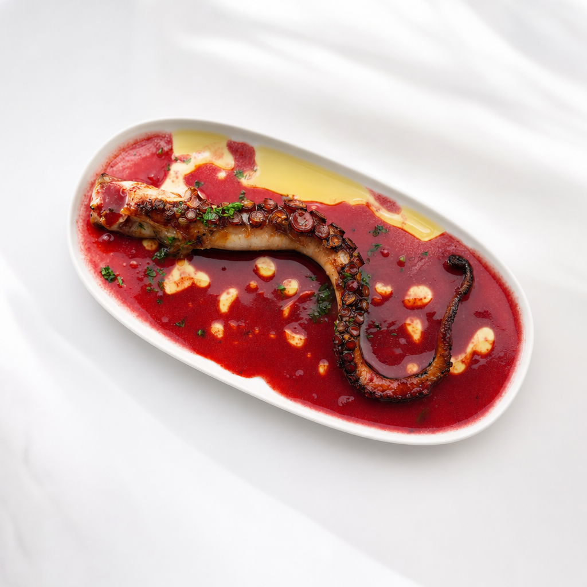
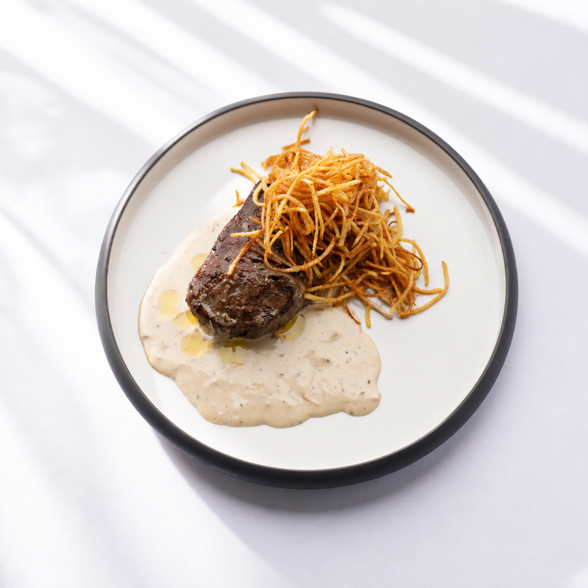
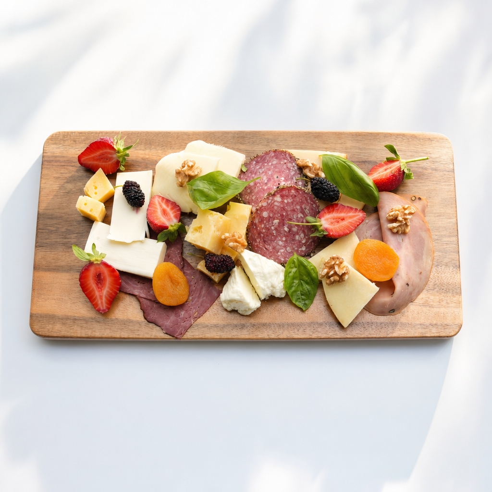
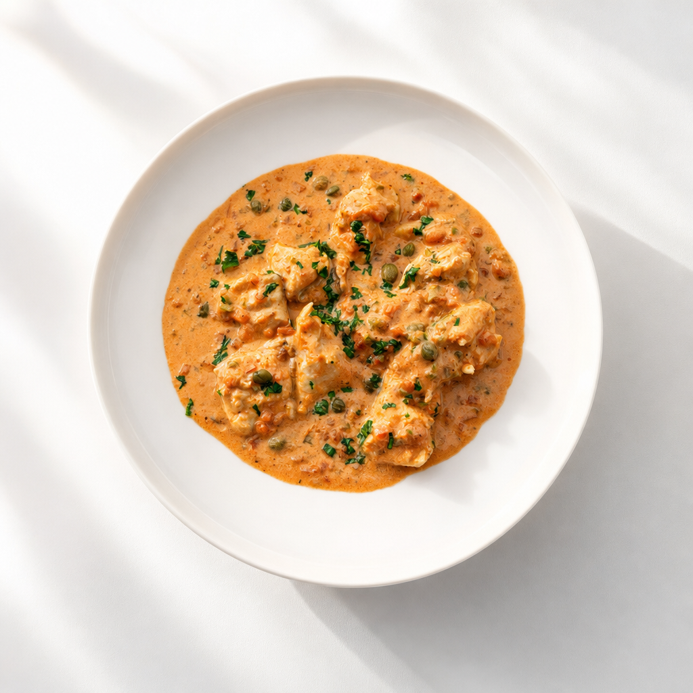
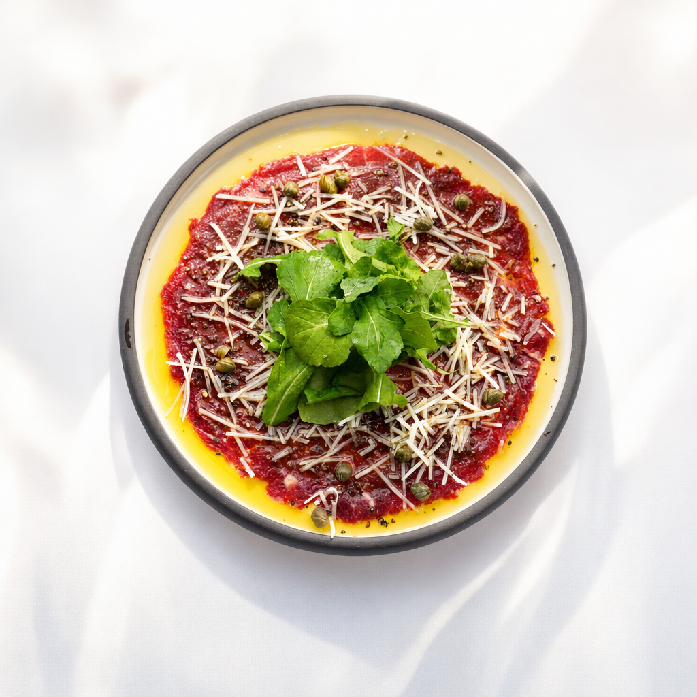
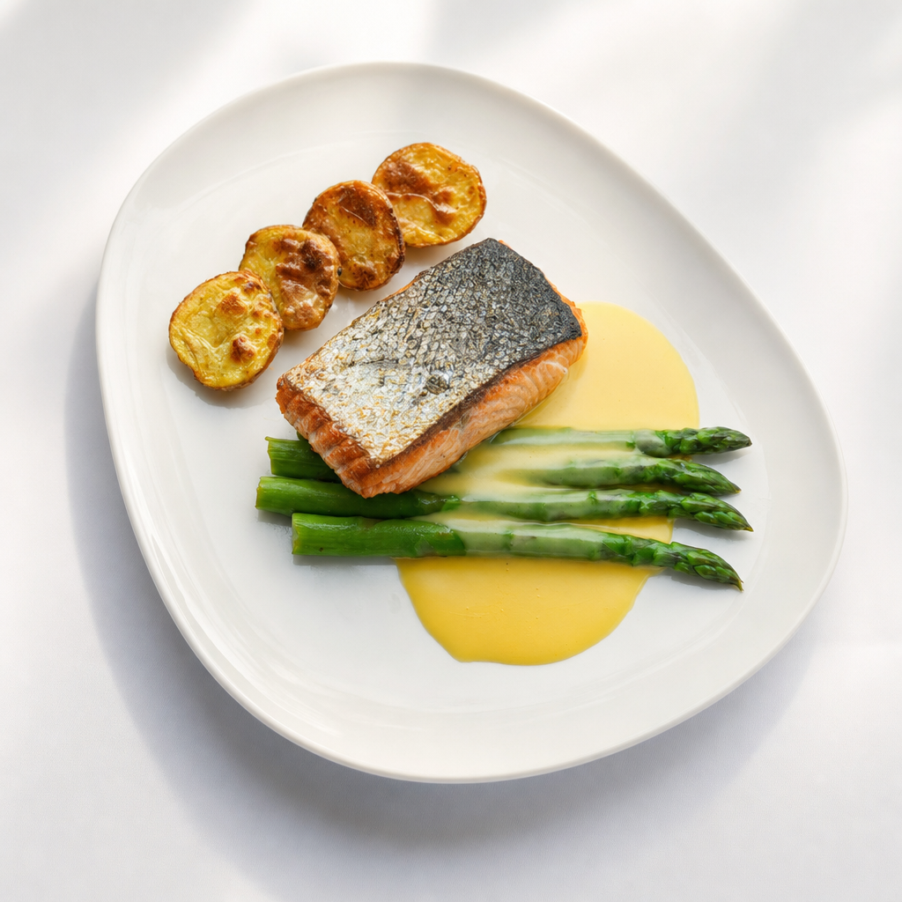
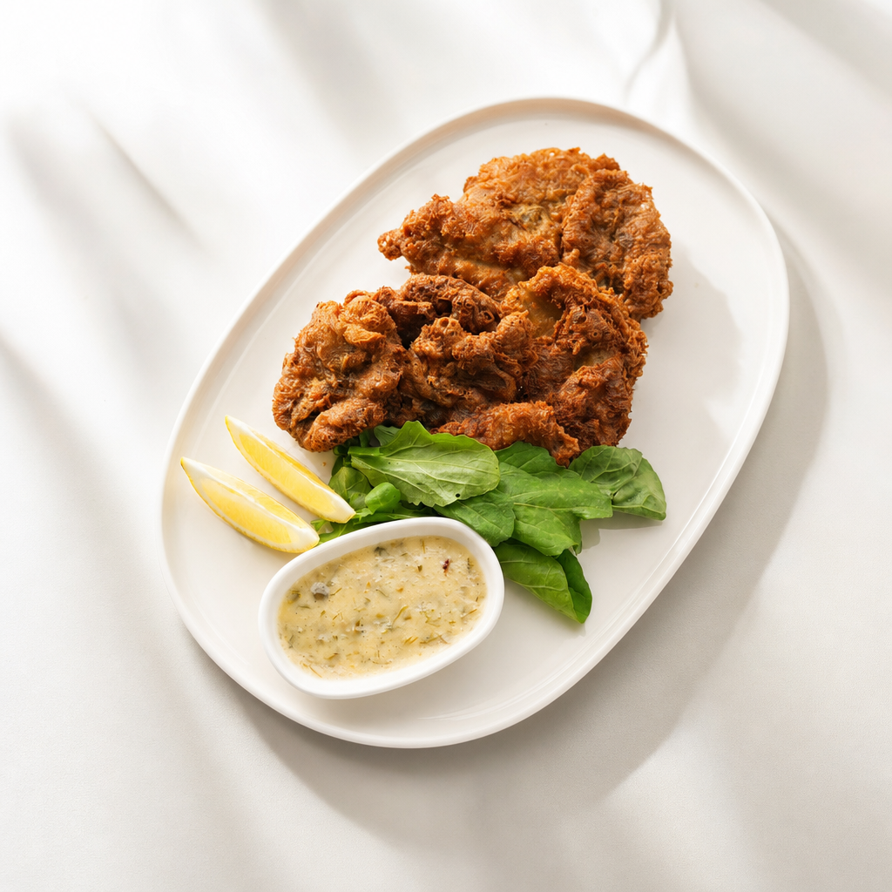
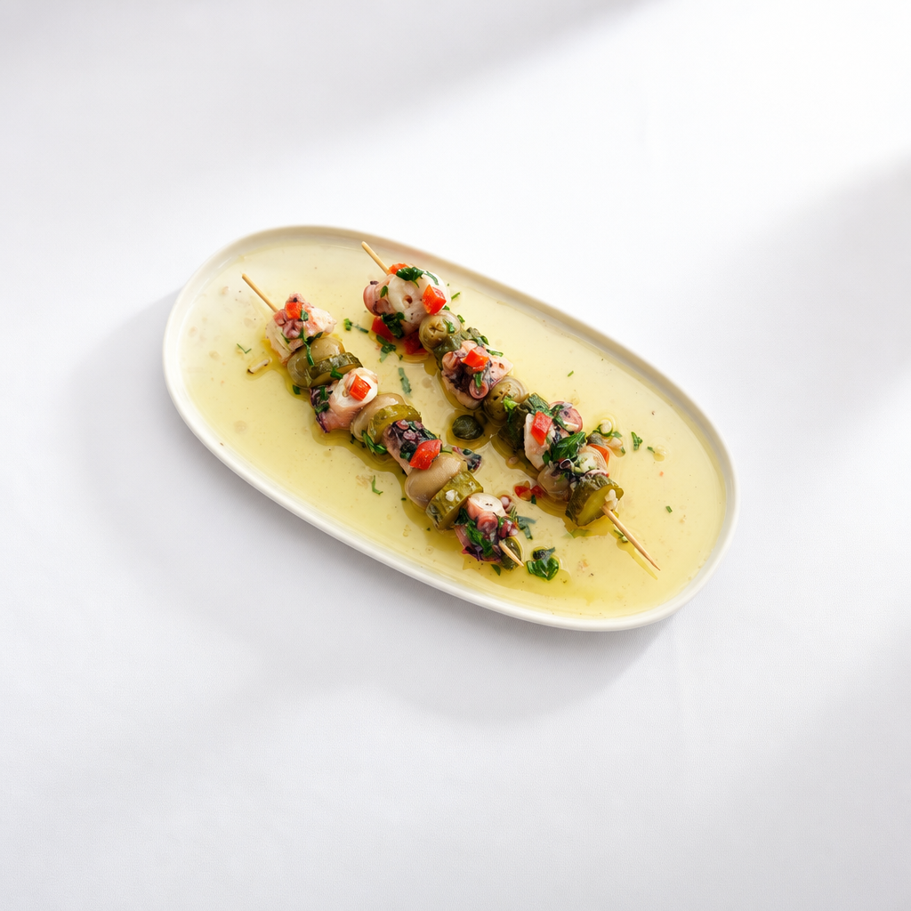

Lüks Restoran
Sapanca'da Lüks Restoran: Mare Gastro ile Fine Dining
Sapanca'da lüks restoran mı arıyorsunuz? Didi Otel bahçesinde, göl manzarasına karşı fine dining deneyimi sunan Mare Gastro'yu keşfedin. Menü ve rezervasyon.
Yazıyı Oku →
Deniz Ürünleri
Sapanca'da Deniz Ürünleri: Taze Lezzetin Adresi
Sapanca'da deniz ürünleri ve taze balık deneyimi: ahtapot, kalamar, karides ve günün balığı. Göl kıyısında, Didi Otel bahçesinde Mare Gastro'da.
Yazıyı Oku →
Fine Dining
Sapanca Fine Dining: Gurme Yemek Kültürü Rehberi
Fine dining nedir, Sapanca'da gurme bir akşam yemeği nasıl olur? Mare Gastro ile fine dining kültürünü, menü mantığını ve rezervasyon detaylarını keşfedin.
Yazıyı Oku →
Şefimiz
Şef Doğan Anapa: Sinemadan Mutfağa Bir Yolculuk
Sinema geçmişini lezzete dönüştüren Yönetici Şef Doğan Anapa'nın hikâyesi ve Mare Gastro mutfağının felsefesi. Sapanca'da şef imzalı fine dining.
Yazıyı Oku →
Özel Anlar
Sapanca'da Romantik Akşam Yemeği için En İyi Mekân
Yıl dönümü, evlilik teklifi ya da özel bir akşam mı? Sapanca'da romantik akşam yemeği için göl manzaralı Mare Gastro'da unutulmaz bir deneyim sizi bekliyor.
Yazıyı Oku →
Sapanca Rehberi
Sapanca'da Ne Yenir? Gurme Bir Hafta Sonu Rehberi
Sapanca'da ne yenir, nerede yemek yenir? Göl manzarasından deniz ürünlerine, gurme bir hafta sonu için Sapanca yemek rehberi ve Mare Gastro önerileri.
Yazıyı Oku →
Didi Otel
Didi Otel Bahçesinde Gurme Deneyim: Mare Gastro
Sapanca Didi Otel bünyesindeki Mare Gastro, göl manzaralı bahçede fine dining sunar. Didi Otel restoran deneyimi, konaklama ve rezervasyon detayları.
Yazıyı Oku →
Hafta Sonu
İstanbul'a Yakın Lüks Gastronomi Kaçamağı: Sapanca
İstanbul'a yakın lüks bir restoran kaçamağı: yaklaşık 1,5 saat mesafedeki Sapanca'da, Didi Otel bahçesinde Mare Gastro ile fine dining. Plan ve rezervasyon.
Yazıyı Oku →
Özel Anlar
Sapanca'da Evlilik Teklifi: Göl Manzarasında Unutulmaz An
Sapanca'da unutulmaz bir evlilik teklifi mi planlıyorsunuz? Göl manzaralı romantik masa, sürpriz düzenleme ve fine dining menüyle Mare Gastro'da hayalinizdeki anı yaşayın.
Yazıyı Oku →
Kutlama
Sapanca'da Yıldönümü Yemeği: Romantik Bir Kutlama Rehberi
Evlilik yıldönümünüzü Sapanca göl manzarasında kutlayın. Mum ışığında akşam yemeği, özel menü ve sürpriz dokunuşlarla Mare Gastro'da unutulmaz bir gece.
Yazıyı Oku →
Kahvaltı
Sapanca'da Göl Manzaralı Kahvaltı: Güne Huzurlu Bir Başlangıç
Sapanca'da göl manzaralı kahvaltı arayanlar için rehber. Didi Otel bahçesinde taze, zengin bir sofra ile güne huzurlu ve lezzetli bir başlangıç yapın.
Yazıyı Oku →
Hafta Sonu
Sapanca Hafta Sonu Rotası: Maşukiye, Kartepe ve Bir Akşam Yemeği
Maşukiye, Kartepe ve göl kıyısını kapsayan bir Sapanca hafta sonu rotası. Gün gün gezi planı ve göl manzaralı bir akşam yemeğiyle Mare Gastro'da kusursuz kaçamak.
Yazıyı Oku →
Mevsim
Sapanca'da Kışın Nereye Gidilir? Göl Manzaralı Sıcak Bir Sofra
Sapanca'da kışın kar manzaralı, sıcak bir gurme deneyimi mi arıyorsunuz? Göl manzaralı Mare Gastro'da kış atmosferi ve huzurlu bir akşam sizi bekliyor.
Yazıyı Oku →
Mevsim
Sapanca'da Yılbaşı Yemeği: Göl Manzarasında Yeni Yıl
Yeni yıla Sapanca göl manzarasında girin. Mare Gastro'da yılbaşı atmosferi, fine dining bir menü ve dingin bir kutlama için erken rezervasyon önerilir.
Yazıyı Oku →
Göl Manzarası
Sapanca'da Gün Batımı Manzaralı Restoran: Günün En Güzel Saati
Sapanca Gölü'nde gün batımına karşı akşam yemeği. Didi Otel bahçesinde açık hava masaları ve fine dining ile günün en güzel saatini Mare Gastro'da yaşayın.
Yazıyı Oku →
Rakı-Balık
Sapanca'da Rakı-Balık Sofrası ve Doğru Meze Rehberi
Sapanca'da göl manzaralı bir rakı-balık sofrası nasıl kurulur? Doğru meze seçimi, taze deniz ürünleri ve Mare Gastro'nun Ege esintili önerileriyle eksiksiz bir rehber.
Yazıyı Oku →
Gece Açık
Sapanca'da Gece Açık Restoran: Geç Saatte Bir Sofra
Sapanca'da gece geç saatte açık restoran mı arıyorsunuz? Didi Otel bahçesinde Cuma–Pazar 24 saat hizmet veren Mare Gastro'da geç saatte göl manzaralı bir sofra.
Yazıyı Oku →
Kutlama
Sapanca'da Özel Gün Kutlaması: Doğum Günü ve Anlamlı Anlar
Sapanca'da doğum günü, kutlama veya sürpriz mi planlıyorsunuz? Göl manzaralı Mare Gastro'da özel masa, imza tatlılar ve sıcak bir atmosferle unutulmaz bir gün.
Yazıyı Oku →